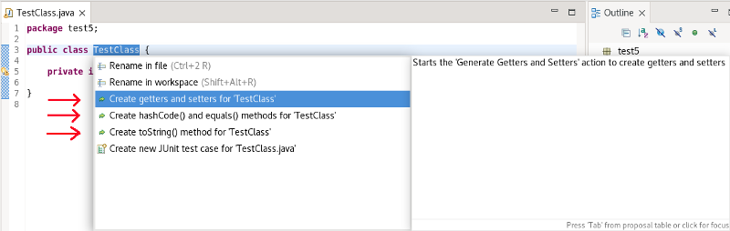
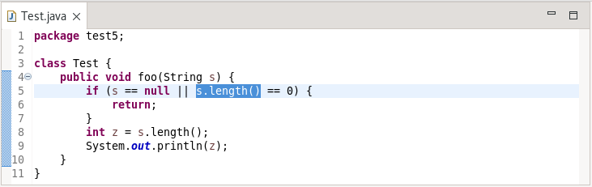
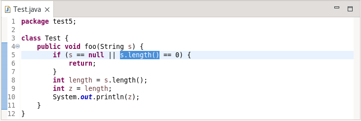

Here are descriptions of some of the more interesting or significant changes made to the Java development tools (JDT) for the 4.26 release of Eclipse. They are grouped into:
See also the Eclipse Platform What's New document for changes in the Platform.
We also recommend to read the Tips and Tricks.
Java™ 19 Support |
|
| Java 19 |
Java 19 is out and Eclipse JDT supports Java 19 in 4.26.
The release notably includes the following Java 19 features:
Please note that preview option should be on for preview language features. For an informal introduction of the support, please refer to Java 19 Examples wiki. |
Java Editor |
|
| New assists for class |
Some existing actions found in the Source menu have been made available as quick assists for a class. These actions are:
All three actions require that there at least be one field in the class and that the action is required: namely, that To use the quick assist, select a class and specify CTRL+1.  |
| Improved 'Extract local variable' |
The extract local variable refactoring available from Refactor > Extract Local Variable has been improved to recognize
situations where adding the local variable may cause a NullPointerException as it precedes code used to check for null. In these cases,
the positioning of the local variable is altered so the null check occurs before the variable declaration.
For example, in the following class, a call to the String length() method is made after verifying the String variable is not null.  If we select the s.length() call and choose to extract this to a local variable to replace all occurrences, the result is:  Note how the declaration is after the if statement to ensure that the check for null occurs first |